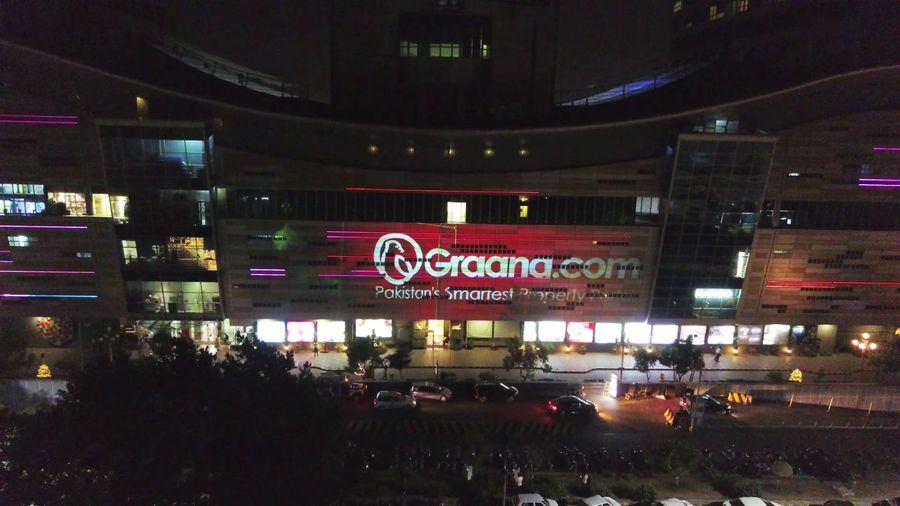

Pixel pitch and viewing distance for LED facades
How to choose LED pixel pitch for a facade or screen: viewing distance, content resolution, brightness, mesh options and a checklist to take to a supplier.

When a client asks us to compare an LED facade with projection, the conversation usually stalls on one number: pixel pitch. It is printed on every LED datasheet, it drives the price more than almost any other specification, and it is often chosen from a brochure rather than from the street where the audience will actually stand. At AKS we spend most of our time on projection mapping, but we regularly advise on LED because the content and viewing questions are the same ones. This note explains what pixel pitch means, how to relate it to viewing distance, what it does to your content files, and what to check before you accept a quote.
What pixel pitch actually is
Pixel pitch is the distance from the centre of one LED pixel to the centre of the next, normally given in millimetres. A 10 mm pitch means a pixel every 10 mm in both directions. Smaller pitch packs more pixels into the same area, so the picture is sharper and can be read from closer. It also needs many more LEDs, more driving electronics and more data, which is why cost climbs steeply as the number falls.
Pitch is not the same as the visible size of the LED. Two products with the same pitch can look different because of the black space around each pixel, the surface finish and the optics. Treat pitch as the main sorting number, then look at the product itself.
Turning viewing distance into a pitch
Viewers stop seeing individual pixels when the gap between them becomes too small for the eye to separate. A person with typical eyesight resolves detail of roughly one arcminute, which works out at around 3.4 metres of distance for every millimetre of pitch. That is the point where pixels merge, not the point where the image looks good. For a facade that is meant to be read as a picture, we plan with a more conservative approach.
- Rule of thumb for minimum distance. Many suppliers quote a minimum comfortable viewing distance in metres that is roughly equal to the pitch in millimetres. For example, a 10 mm product is often quoted at about 10 metres or more.
- Rule of thumb for best viewing. Detailed imagery, such as faces, small text or photography, reads best from several times that distance.
- Far distances. Bold graphics, large type and simple motion survive very coarse pitch. A tower seen from across a city does not need the pitch of a lobby display.
These are guides, not guarantees. Ask the supplier for the viewing distance they recommend for your content type, and then check it against a site plan. Our note on audience sightlines covers how to mark where people will stand, and the same exercise applies to an LED surface: measure the nearest realistic position and the main gathering position, then choose for both.
What pitch does to your content
The pitch fixes the pixel count of the surface. Divide each dimension of the wall by the pitch and you have the resolution of the canvas. A wall 10 metres wide and 5 metres high at a 10 mm pitch is 1,000 by 500 pixels, which is less than a standard HD frame. At 20 mm the same wall is only 500 by 250. Designers who are used to working in HD or 4K are often surprised by how little room there is.
That has practical consequences for design:
- Fine lines, thin type and detailed textures will break up or flicker. Use heavier strokes and larger type than you would for a screen.
- Artwork should be built at the native resolution of the wall, or at a clean multiple of it, so pixels are not resampled unevenly.
- Subtle gradients can show banding, so test them on a real panel rather than on a monitor.
- The wall may not be a rectangle. Curved, stepped or irregular LED surfaces need a pixel map, and the content should be designed to that map. We apply the same discipline to building models in choosing canvas resolution.
Projection works differently. A projected image is limited by projector resolution and throw distance, and it lands on the real architecture, as we discuss in projection mapping or LED facade: how to choose. With LED the pixel grid is physical and permanent, so the content has to fit the grid rather than the other way round.
Brightness, contrast and daylight
LED surfaces emit light, so they are not limited by the ambient conditions in the way a projected image is limited by the wall. Outdoor products are built to be much brighter than indoor ones because they must remain readable in daylight. That brightness is a benefit in the day and a problem at night: an unmanaged outdoor panel can be glaringly bright after dark. Ask whether brightness can be reduced by schedule or by sensor, and check what the local rules allow, a point that overlaps with the approvals described in permissions for public shows.
Contrast also depends on the black level of the panel and on how much light falls on its face. Strong sun or street lighting washes out any surface, so orientation matters. A south-facing wall in direct sun will look different from a north-facing one, and a site visit at the hours when the screen will be used is worth more than any specification sheet.
Mesh and transparent LED on glass buildings
Many city buildings have glass or open facades that cannot carry a solid LED panel. Mesh and strip-style products leave gaps so that people inside can still see out and light can pass through. They usually have a much coarser pitch and lower resolution than a solid wall, and the image reads best from a distance. The trade-off is between transparency, weight, wind load and image quality. The more open the product, the less detail it can show, so content for these surfaces should be bold and simple. Check the supplier information for the open area and the installation method, and ask the building owner and a structural engineer whether the fixing points can carry the load.
Practical constraints that affect the choice
Pitch is only one part of a facade installation. Before you commit, look at the following:
- Weight and fixing. Panels, frames and cabinets add load to the building, and wind adds more. Heritage and glass structures can be unsuitable.
- Weather protection. Check the ingress protection rating for the front and the rear of the product, and how the system manages heat.
- Power and data. A large surface draws significant power and needs structured signal distribution. See power and signal cabling for the same planning habits.
- Service access. Dead pixels and failed modules happen. Find out whether panels are serviced from the front or the back and who will do it.
- Camera behaviour. If the surface will be filmed or streamed, check the refresh rate and scan settings, as poor settings cause banding in video. Our note on filming and livestreaming a show explains the problem for projection, and LED has its own variants.
- Control. Confirm which processor and playback system drive the wall and how it is triggered, using the thinking in show control and timecode.
A pitch selection checklist
| Question | Why it matters |
|---|---|
| Nearest and main viewing distances | Sets the finest pitch you need and the coarsest you can accept |
| Content type: logos, text, video, live feed | Detail needs a finer pitch or a larger surface |
| Wall size and resulting pixel count | Defines the canvas your designers build to |
| Day and night brightness limits | Avoids washed-out images by day and glare by night |
| Structure, weight and wind | Confirms the building can carry the product |
| Camera use | Determines refresh and scan requirements |
| Service and spares plan | Keeps a failed module from becoming a permanent blemish |
Test before you buy
The most reliable step is a sample. Ask the supplier for a few panels, put your real content on them and look at them from the distances you measured on site. A logo that seems crisp in a render can look soft or jagged on a real grid, and a gradient that looks smooth on a laptop can band. Ten minutes in front of a sample can save a very expensive correction later.
Whether the final answer is LED, projection or a combination, the work starts with the audience, the surface and the content. Our experience of large public surfaces includes the Pakistan Monument, Parliament House in Islamabad and Mohatta Palace, and the lesson that carries over is simple: decide where people will stand before you decide what to buy. If you are weighing an LED facade against a projected show and want a straight view of both, send us the location and your viewing positions through the contact section.
Choosing between LED and projection?
Tell AKS Creative Studio the building, where your audience will stand and the date, and we will help you compare the options.
Start a conversation ↗